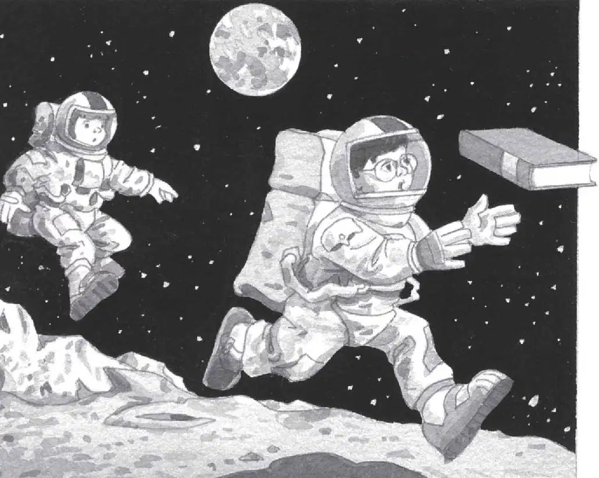

“Oh, wow!” said Annie. She took a step forward.
But Jack stood frozen. He wanted to get a good look at everything first.
He stared at the ground. He was standing in a layer of gray dust as fine as powder.
Footprints were everywhere. Jack wondered who had made them.
He reached into his pack for the moon book. To his surprise, it was as light as a feather!
He found a picture of footprints on the moon. He read:
The moon has no rain or wind to blow the dust around. So footprints will never wear away naturally, not even in a billion years.
“Oh, man,” Jack said.
The moon was the stillest place he had ever, ever been. It was as still as a picture. And its stillness would never, ever end.
Jack stared at the ink-black sky. A lovely blue-and-white ball glowed far away.
Earth.
For the first time, it really hit Jack. They were in outer space.
“Look!” Annie cried, laughing.
She bounded past Jack—almost flying through the air. She landed on her feet. Then she jumped again.
“I’m a moon rabbit,” she called.
Jack laughed. How does she do that? he wondered. He turned a page and read:
A person weighs less on the moon because of the moon’s low gravity and lack of air. If you weigh 60 pounds on Earth, you would only weigh 10 pounds on the moon.
“Don’t just stand there reading!” said Annie, grabbing the book from Jack’s gloved hand. She tossed it into space.
It flew far away.
Jack started after it.
He bounded up and down. Boing! Boing! Boing! Now he felt as light as a feather.
“Look!” he called to Annie. “I’m a moon rabbit, too.”
Where Jack’s boots hit the ground, moondust gracefully sprayed into space.
The book had landed at the edge of a shallow crater.
When Jack reached it, he tried to stop. But his feet slipped.

He fell right over and lay on his side. He tried to stand. But he was off-balance.
He tried again. But the dust was just too deep. And his spacesuit was too clumsy.
“You okay?” asked Annie.
“I can’t get up,” said Jack.
“You shouldn’t have been goofing off,” said Annie wisely.
“You goofed off first,” said Jack. “Now, help me up, please.”
Annie started toward him.
“Don’t fall, too,” warned Jack.
“I won’t.” Annie moved very slowly. She half floated, half walked.
“Give me your hand,” she said.
Annie grabbed Jack’s hand. She pressed her boot against his and pulled him up.
“Thanks,” he said.
“No problem,” she said. “It was easy. You were really light.”
“Thank goodness,” said Jack. “It’s impossible to get up alone.”
He picked up the moon book. It was covered with dust. He brushed it off.
“Oh, wow! Look!” said Annie. She stood at the edge of the crater.
“What is it?” said Jack.
“A moon buggy!” said Annie.
The buggy was parked in the crater. It had four huge wheels.
“Let’s go for a ride,” said Annie.
“We can’t,” said Jack. “We just have two hours of air in our tanks. Remember?”
“I bet we’ll find the M thing faster if we take the moon buggy!” Annie bounded into the crater.
“But we can’t drive!” said Jack.
“I bet I can drive this,” said Annie. “It looks easy. Come on!”
She jumped into the driver’s seat.
“But you don’t have a license!” said Jack.
“Who cares?” said Annie. “There aren’t any roads on the moon, or stoplights, or policemen either.”
She was right, Jack thought.
“Well, go slow,” he said. And he climbed in beside her.
Annie pushed a button labeled ON.
The moon buggy lurched backward.
“Yikes!” said Annie.
“Step on the brake!” said Jack.
Annie pressed a pedal on the floor. The buggy stopped with a jerk.
“Whew,” she said.
“It must be in reverse,” said Jack. “Let me study this—”
But before he could study anything, Annie pushed another button.
The buggy tilted back. Its front wheels started to rise into the air.
“Let me out of here!” said Jack.
Annie pushed more buttons.
The buggy’s front wheels landed back on the ground. And the buggy leaped forward.
“Slower!” said Jack.
“I can’t,” said Annie. “I don’t know how!”
Annie steered the buggy over the tracks on the ground. The wide wheels kept it from sinking into the deep dust.
“Careful!” said Jack.
The buggy zoomed out of the crater.
Gray clouds of dust rose behind them as they took off across the moon.